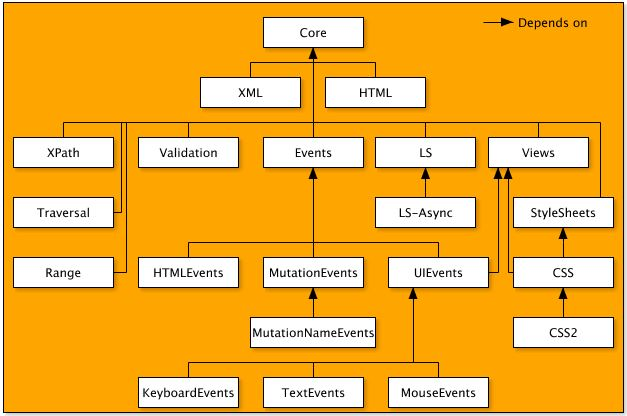
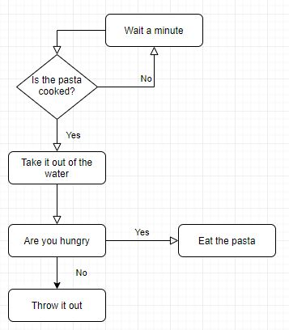
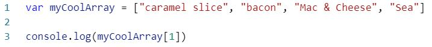
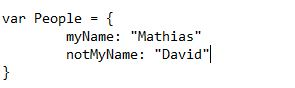
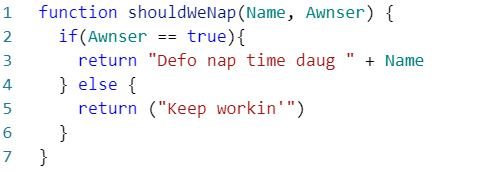

DOM does stand for Document Object Model. An Object Model is a "logical interface, software or system that is modeled through the use of object-oriented techniques. It enables the creation of an architectural software or system model prior to development or programming." The DOM does represent the page and is responsible for showing all the document structure, style, and content but we never see the DOM.
The DOM shows the document as nodes and objects so HTML, CSS, and JS can connect to the page to make changes to the pages that we make. Both the code we write and the user interface on the browser are represented by the DOM.
The DOM is built by multiple API's(application program interface) that build it together. APIs are sets routines, protocols, and tools that make programs but they always do it in the background so we do never see them make them. JavaScript (and other programming languages) can access the DOM to make changes to the document and features on the document. The changes can be as small as changing text or replacing the whole document. Without the DOM JavaScript could not change the page or anything on the page. The pages content is stored in the DOM and can be accessed and changed with JavaScript or even the DevTools on your browser. The DOM does allow make the structural representation of the page available in one consistent API which makes it easier to use and more accessible.

Whenever you change the document, children, making a button, etc... on the document you are accessing the DOM to change it. The DOM is an object-oriented representation of the web page.
HTML does stand for Hypertext Markup Language, This is the code you use to make WebPages. It is where you put all the tags like paragraph tags. You keep text and picture in tags like this and is the text you see on pages but you see it without the tags.
CSS does stand for Cascading Style Sheet which is the part that does control how your page does look with more detail than the HTML page. CSS does make the page look pretty and can improve the accessibility and usability of the site which is important to a business that does want to attract clients and a bad website is a big put off, especially when it is the first thing a lot of people see of a business if they google it.

I like to see HTML as a way of chipping away at a block of wood to make big changes in it or get the general shape of the wood because like with HTML code without CSS you can get a general idea of what the WebSite is. Later you can come in with CSS which I see as sandpaper, it does smooth out the rough edges and make it look nice and turn a rough shape into a beautiful carving by adding all the small details.
Loops. There are many different types of loops such as for loops, while loops, do-while loops. These loops use parameters to decide if they should do something or not. For example... If a box is bigger than another box put the smaller box inside the bigger box. We do sometimes use it in everyday life as well for example... Is the pasta cooked yet? No check again later and so on until the "No" becomes a yes and you can move on to the next step.
If statements do also use parameters but if you want it repeated you will have to put lines and lines of the same code or put it inside a loop. If statements are normally done once then do whatever you tell it to and move on. For example... If thirsty drink, and if you are not just move on.
Arrays do store data in like a list. The list can have strings(words) integers(numbers) and many other types of infomation, it can even have other lists inside of it. The way you set one up is using a variable which is how you give it a name then you then you open square brackets [] and put what you want inside it and separate it with a comma ",". To access data you of an array you use the name of the array with square brackets next to it and put the number of which item in the array you want. Remember the numbers start at 0. Because of this we can tell that the example belows output will be 'bacon'.
Objects are similar. You start them by declaring them with a variable to which you do create properties inside the variable. Each property has its own value. This does make objects ideal for keeping things like people, cars, or anything with many things you can keep track of it. There are two ways of getting data you of an object, you can use object.property or object[property], this will return what the property is equal it. For example, People[myName] would return Mathias.
Functions are one of the most useful things in JavaScript. They do reduce the amount of code by allowing easy reuse of code. Functions are blocks of code (generally kept at the top of a .js doc) that can be called on, you can give them some data when you call them and they will take it and use it in the function. They also have local variables that are also useful to keep your code clean and to remove dead code. They are declared by using the keyword "function" followed by brackets. The brackets can contain keywords you want to use in the function.
